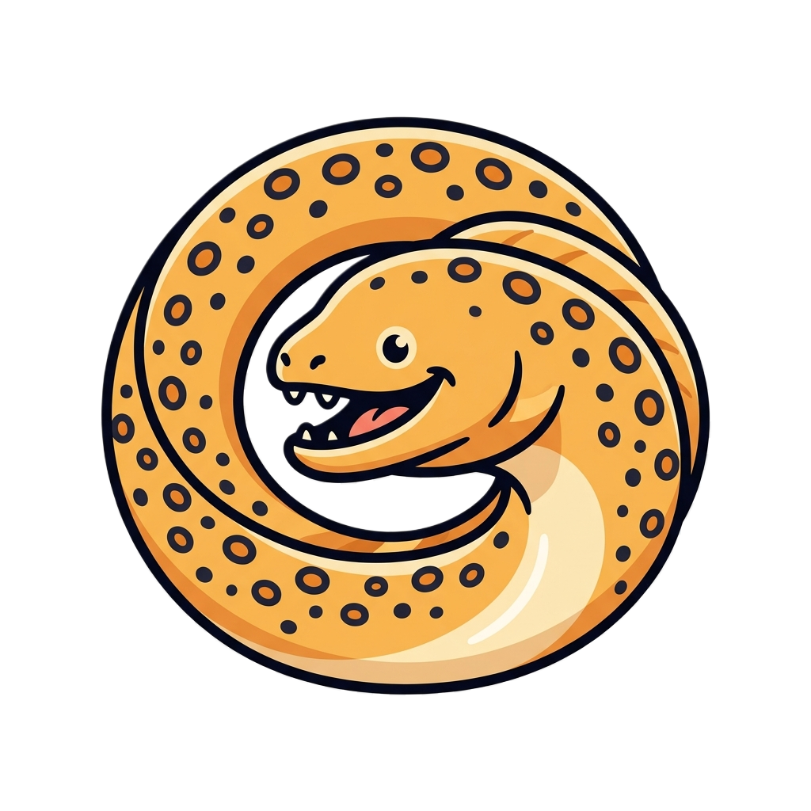
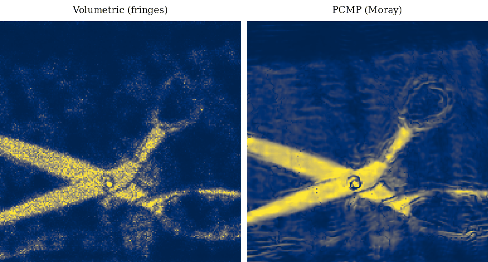

Spectrally ParameterizedClosed-form spectral forward models for coherent active sensing, validated on real 77 GHz FMCW radar.
How a fixed forward operator is computed in a differentiable pipeline can be as important as the choice of neural representation itself. We parameterize the forward model of a coherent sensing system directly in the spectral domain, evaluating each measurement bin through a closed-form kernel rather than synthesizing the full time-domain signal. The result is a substantially shorter differentiable graph, per-bin supervision, and a better-conditioned optimization landscape. We pair this with Phase-Coherent Manifold Parameterization, a scene representation that absorbs geometric mismatch between the object surface and the assumed imaging plane — the source of wavelength-scale fringe artifacts at 77 GHz. On real radar measurements across five objects, Moray consistently outperforms classical and neural baselines.
Classical coherent backprojection produces noisy, fringed reconstructions. Moray suppresses both.
Under a coherent measurement, even sub-centimeter mismatch between the object surface and the assumed imaging plane wraps into a periodic phase pattern, which the optimizer faithfully reproduces as fringes set by the carrier wavelength (~3.9 mm at 77 GHz). We resolve this by jointly learning the reflectivity and a deformable surface manifold — letting the reconstruction geometry adapt to where the scatterers actually live.

Drag the handle to compare Backprojection and Moray at the same aperture fraction. Moray degrades gracefully where backprojection ghosts and aliases.
Pre-rendered at 75%, 50%, 25%, and 15% transmit positions (random subsampling).
Citation will be updated upon acceptance and de-anonymization.
@inproceedings{moray2026,
title = {Moray: Spectrally Parameterized Neural Inverse Reconstruction},
author = {Anonymous Authors},
booktitle = {Advances in Neural Information Processing Systems (NeurIPS)},
year = {2026},
note = {Under review}
}